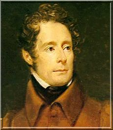

Alphonse de Lamartine (1790-1869)

Fransýz asýllý þair ve siyaset adamýdýr. Deðiþik dönemlerde diplomat ve siyaset adamý olarak görev yapmýþtýr. Ýki kez doðuya seyahat ederek Ýslâmiyet'i yerinde öðrenme ve Müslümanlarý yakýndan tanýma fýrsatýný yakalamýþtýr. Bu seyahatleri esnasýnda, baþta Ýstanbul olmak üzere, çok sayýda Ýslâm beldesini ve kutsal yerleri görme imkanýný elde etmiþtir. Ýkinci seyahati sýrasýnda Osmanlý Sultaný Abdülmecid tarafýndan kabul edilerek, kendisiyle görüþmüþtür. Ýslam dini ve peygamberi hakkýndaki görüþlerini eserlerinde dile getirerek övgüyle söz etmiþtir. Risâle-i Nur'da ismi zikredilerek kendisinden, "büyük ve munsif [insaflý] Fransýz þairi Lamartin" (Tarihçei Hayat, s. 16) þeklinde söz edilmektedir.Lamartine, 21 Ekim 1790 tarihinde Macon'da doðdu. Doðumundan bir yýl evvel gerçekleþmiþ olan Fransýz Ýhtilalinden dört yýl sonra, Milly yakýnlarýnda bulunan bir çiftliðe taþýnan ailesiyle birlikte mütevazý bir hayat yaþadý. Bir süre eðitim gördükten sonra gençlik yýllarýnda Ýtalya'ya gitti. Hýristiyanlýk dininde karþýlaþtýðý tezatlýklar dininden soðumasýna, uzaklaþmasýna ve felsefi bir akýma kapýlmasýna sebep oldu. Görünüþte kaliteli olma ve kalp temizliðini esas alan transandantalizm felsefesine baðlandý.
Lamartine, ilk þiir derlemesiyle ün kazanmasýna ve genç romantik kuþak tarafýndan üstat ilan edilmesine raðmen, tercihini baþka bir alanda kullandý. Diplomatik kariyer yapmak gayesiyle politikaya atýldý. Bunda savurgan bir hayat yaþamasý ve daha çok para kazanma isteði de etkili oldu. 1820 yýlýndaki evliliðinden kýsa bir süre sonra Napoli'deki elçilik katipliðine atandý. Burada bulunduðu sýrada, "Þairce Düþünceler" adlý eserini yayýnladý. Bu eser ayný zamanda onun ilk büyük eseridir. Akabinde, "Sokrat'ýn Ölümü" ve "Þairce Dini Ahenkler" isimli eserleri baþta olmak üzere baþka eserler de yayýnladý.
Lamartine, kral tahtýna Louis Philippe'in geçmesinden sonra diplomatik görevlerinden istifa etti. Napoli'den ailesiyle birlikte ayrýlarak Doðu seyahatine çýktý. Sýrasýyla Marsilya üzerinden Malta, Yunanistan'ýn baþkenti Nauplion ve Atina'ya uðradýktan sonra Beyrut'a gitti, Suriye ve Lübnan'ý dolaþtý, Filistin'i gezdi. Bu gezi sýrasýnda milletvekili seçildiðini öðrenince tekrar Ýstanbul üzerinden Fransa'ya dönmeye karar verdi. 20 Mayýs 1833 tarihinde Ýstanbul'a geldi. Bu sýrada tahtta bulunan Osmanlý padiþahý Abdülmecid tarafýndan iyi karþýlandý. Kendisine Aydýn'dan bir çiftlik hediye edildi.
Lamartine, Ýstanbul'un bir çok yerini gezdi. Beyoðlu'nda kaldýðý süre zarfýnda sýk sýk binalarýn çatýsýna çýkarak Ýstanbul'u seyretti. Padiþah sarayýný gezme ve görme imkanýný da buldu. Bir süre Fransýz elçiliðinin Tarabya'daki yazlýðýnda kaldý. 23 Temmuz 1833 tarihinde karayoluyla Ýstanbul'dan ayrýldý. Edirne, Sofya, Niþ, Belgrat ve oradan da Viyana'ya geçti. Yapmýþ olduðu seyahat ile ilgili hatýralarýný 4 cilt halinde 1835 yýlýnda bastýrdý.
Lamartine, 1848 devriminden sonra Cumhuriyetin ilk geçici hükümetini kurdu. Liberal fikirlerinden ötürü büyük sermaye grubuyla anlaþamayýnca tedrici olarak siyasi hayatýn dýþýna itildi. Bu arada ekonomik sýkýntýya düþtü. Bu geliþmeler üzerine tekrar doðuya yöneldi. Marsilya'dan yola çýktýktan sonra 1 Temmuz 1850 yýlýnda Ýstanbul'a vardý. Bu geliþince Mustafa Reþit ve Âli Paþalarýn yardýmýyla padiþahla görüþebileceðini öðrendi. Görüþmeye giderken henüz inþaatý devam eden Dolmabahçe sarayýný gördü. Ihlamur Kasrýnda Sultan Abdülmecid ile görüþtü. Akabinde Sultan ile birlikte Harbiye Kýþlasýndaki Harbiye öðrencilerinin imtihanlarýna katýldý.
Lamartine'in, bu ikinci geliþindeki maksatlarýndan bir tanesi Ýzmir'de bir çiftlik iþletmekti. Yaklaþýk on beþ gün Ýstanbul'da kaldýktan sonra Ýzmir'e gitti. Ancak, çiftlik iþletme iþinde baþarýlý olamayýnca tekrar memleketine dönmeye karar verdi. Herhangi bir gelir kaynaðý olmadýðýndan, seyahatinden sonra kaleme aldýðý, yolculuðunun konu edildiði eserini yayýnlayarak (1852) geçimini saðlamaya çalýþtý. Daha sonra da Türkiye Tarihi adlý eseri kaleme aldý.
Lamartine, gerçekleþtirdiði iki Doðu seyahatinden sonra Ýslamiyet'i ve Müslümanlarý daha yakýndan görme ve tanýma imkanýný buldu. Siyasi ve dini konular üzerinde araþtýrmalar yaptý. Hýristiyanlýða oranla Ýslamiyet'in daha ileri ve mükemmel bir din olduðunu bizzat görüp öðrendi. Öðrendiði bu yeni bilgilerden sonra Hýristiyanlýktan daha da uzaklaþmaya ve tenkide baþladý. Bu konulardaki düþünce ve fikirlerini "Türkiye Tarihi" (Histoire de la Turquie) adlý eserinde yazýya döktü. Peygamber Efendimiz (asm) ve Ýslamiyet hakkýndaki görüþlerini dile getirdi.
Lamartine, Ýslam tarihini okuyup inceledikten sonra, Hazreti Muhammed'in yalancý bir peygamber olduðunun düþünülemeyeceðini belirtti. Yalancýlýðýn ayný zamanda iki yüzlülük olduðunu, yalanda doðrunun kudretinin bulunmadýðýný ve iki yüzlülüðünde inandýrma kuvvetinden yoksun olduðunu belirtti. Mekanikten örnek vererek, bir cismin atýlýrken varabileceði yerin fýrlatma gücü ile orantýlý olduðunu hatýrlattý. Buna göre manevi ilhamýn gücünün de meydana getirebildiði eserlerle orantýlý olduðunu yazdý. Buradan hareketle, çok sayýda eser vücuda getiren, çok uzak bölgelere kadar yayýlan, uzun zamandan beri ayný kudretini muhafaza eden Ýslamiyet'in yalan olamayacaðýný belirtti. Bu kadar faaliyet ve geliþmenin vücuda gelebilmesi için söz konusu manevi gücün samimi ve çok inandýrýcý olmasý gerektiðini ilave etti.
Lamartine, Hazreti Muhammed'in hayatýna dikkati çekerek; mücadelelerini, hurafe ve putlara karþý kahramanca karþý duruþunu ve nihayetinde onlarý parçalamasýný, putperestlerin tüm hiddetlerine karþý koyuþunu, kendisine saldýrýlmasýna raðmen on üç yýl gibi uzun bir süre Mekke'de kalarak dayanmasýný, her türlü hallere tahammülünü, Medine'ye hicretini, kendisinden çok güçlü düþman ordularýyla savaþmasýný, en büyük felaketin karþýsýnda bile duyduðu insan üstü güvence, sabýr ve tevekkülünü, sonsuz ibadeti, vefatýndan sonra da devam eden þan ve þerefini hatýrlatarak, böyle bir insanýn asla yalancý bir peygamber olamayacaðýný, aksine bütün bunlarýn, büyük bir iman sahibi olduðunu gösterdiðini sözlerine ekledi.
Lamartine, Peygamber Efendimiz ile birlikte ortaya konan ve teblið edilen, tek ve ebedi olan Allah'ýn varlýðý ile putlarýn tanrý olamayacaðý inancýna dikkati çekti. Birincisi ile o zamana kadar bilmedikleri bir Allah'ýn varlýðý Araplara öðretilip tanýtýldý. Ýkinci ile de tanrý sandýklarý putlarýnýn ellerinden alýnmasý saðlandý. Böylece bir kýlýç darbesi ile yalancý putlar ve ilahlar yerle bir edilirken, bunlarýn yerine Allah'ýn birliði fikri yerleþtirildi. Ayrýca Peygamber Efendimiz için þu ifadelere yer vermektedir;
"Filozof, hatip, peygamber, kanun koyucu, cenkçi, insan düþüncelerini etkileyici, bir büyük Ýslam Devletini kuran adam: Ýþte Muhammed budur! Ýnsanlarýn büyüklüðünü ölçmek için kullanýlan bütün mikyaslarla ölçülsün! Acaba O'ndan daha büyük birisi var mýdýr? Olamaz!"
Risâle-i Nur'da, Bediüzzaman'ýn iktisatlý oluþu örnekleriyle verilirken, Lamartine'in "Yemek için yaþamýyor, belki yaþamak için yiyor" (Tarihçe-i Hayat, s. 16) sözlerine atýfta bulunulmakta, büyük ve insaflý Fransýz þair olarak kendisinden söz edilmektedir.
Eserleri:
Lamartine, geçimini büyük ölçüde kaleme aldýðý eserleriyle saðlamaya çalýþtý. Özellikle seri bir þekilde þiir yazmasýyla tanýndý. Osmanlý devleti ve Rusya ile ilgili olarak yazdýðý eserlerinden büyük para kazandý. Eserlerinden bazýlarýþunlardýr: Þairce Düþünceler, Sokrat'ýn Ölümü, Jocelyn, Yeni Þairce Düþünceler, Görüntüler, Bir Meleðin Düþüþü, Sýrdaþlýklar, Jinondenler Tarihi, Türkiye Tarihi.